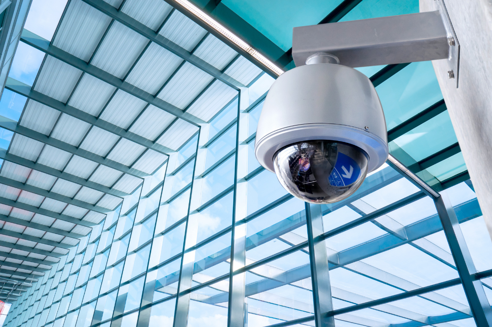

1
Επίλεξε προφίλ
Διάλεξε την κατηγορία που σε εκφράζει περισσότερο, ανάλογα με τη σχέση σου με τα συστήματα CCTV.
Μέσα από σύντομες ερωτήσεις και βασική ενημέρωση, μπορείς να εξερευνήσεις διαφορετικές πλευρές της βιντεοπαρακολούθησης και να διαμορφώσεις τη δική σου άποψη.

Η ιστοσελίδα αυτή δημιουργήθηκε για να προσεγγίσει το θέμα των CCTV με απλό και κατανοητό τρόπο, χωρίς να προσπαθεί να σου επιβάλει μία συγκεκριμένη άποψη.
Στόχος της είναι να σε βοηθήσει να σκεφτείς πιο ουσιαστικά τα οφέλη, τους προβληματισμούς και τα όρια της χρήσης τους στην καθημερινότητα.
Η εμπειρία οργανώνεται σε τρία απλά βήματα, ώστε η πλοήγηση να είναι ξεκάθαρη, φιλική και εύκολη.
Διάλεξε την κατηγορία που σε εκφράζει περισσότερο, ανάλογα με τη σχέση σου με τα συστήματα CCTV.
Ακολούθησε μια σύντομη διαδρομή ερωτήσεων που σε βοηθά να σκεφτείς ζητήματα ασφάλειας, ιδιωτικότητας και υπεύθυνης χρήσης.
Στο τέλος θα δεις συνοπτικά πληροφορίες για τα οφέλη, τους κινδύνους και τις βασικές αρχές ορθής χρήσης των CCTV.
Οι ερωτήσεις που ακολουθούν δεν έχουν σκοπό να σε οδηγήσουν σε μία «σωστή» απάντηση. Σκοπός τους είναι να σε βοηθήσουν να δεις το θέμα από διαφορετικές οπτικές και να καταλήξεις στο δικό σου συμπέρασμα.
Στο επόμενο βήμα θα ξεκινήσει η διαδρομή με βάση τη δική σου σχέση με τα συστήματα CCTV.
Μετάβαση